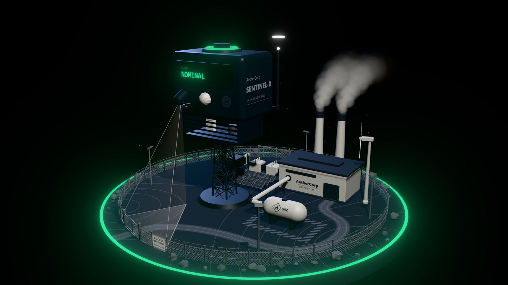
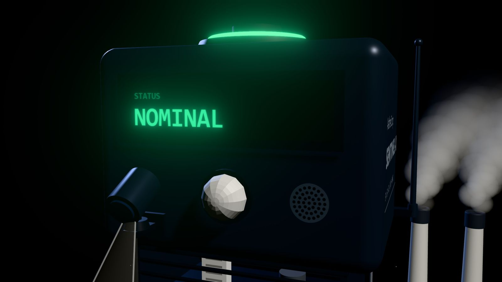
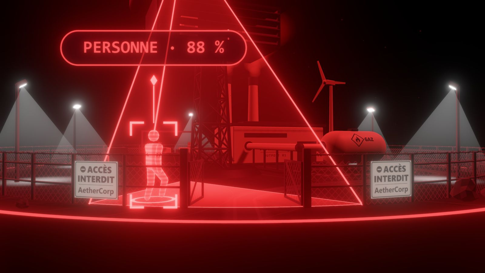
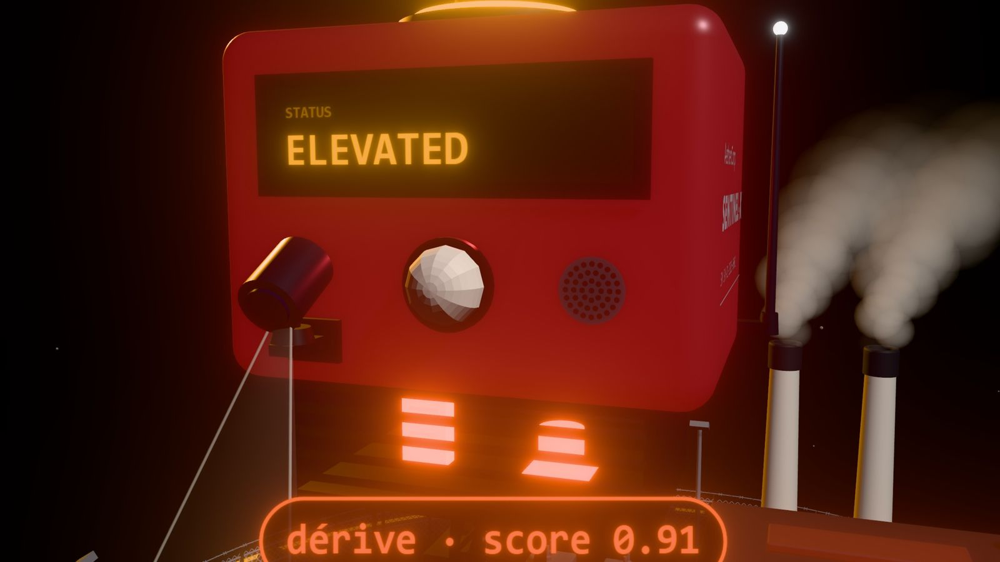

Cyberattaques
Écoute, usurpation, injection. Chaque canal est chiffré et authentifié.

Veiller là où personne ne peut.
Workshop EPSI · M1 · Octobre 2026
La mission · AetherCorp, 2050
Écoute, usurpation, injection. Chaque canal est chiffré et authentifié.
Espionnage autour du site. Une IA voit la personne, la caméra la suit.
Fuite de gaz, surchauffe. L’Alarme part sur place, la dérive est prévue.
L’équipe · Option A
Démo live · 3 minutes
La sirène part, le Twin rougit
La figurine suit la personne
Une onde part du boîtier
L’Incident rejoué en REPLAY
L’Alarme pilotée à distance
Le Twin repasse au vert
Les attendus du sujet
Firmware, API temps réel, dashboard
Vision et maintenance prédictive
Docker sur le Pi, Wi-Fi dédié
Tout chiffré, serveur durci
Architecture
ESP32 · 4 sondes
Alarme autonome
Raspberry Pi 4
API · IA · Twin
Un navigateur,
rien d’autre
Edge · le Sentinel

SENTINEL · DIGITAL TWINIA locale · sur le Pi, sans cloud

par image pour repérer une personne. Le sujet demande moins de 100.

d’avance sur le seuil, quand une dérive lente s’installe.
Cybersécurité
ports publiés, 443 et 8883, tous deux en TLS
port en clair : ni MQTT 1883, ni HTTP 80
comptes MQTT, chacun borné par une ACL
Notre différence
Rigueur d’ingénierie
tests automatisés, tous verts
pull requests relues et fusionnées
secret dans le dépôt, vérifié à chaque PR
Vos questions